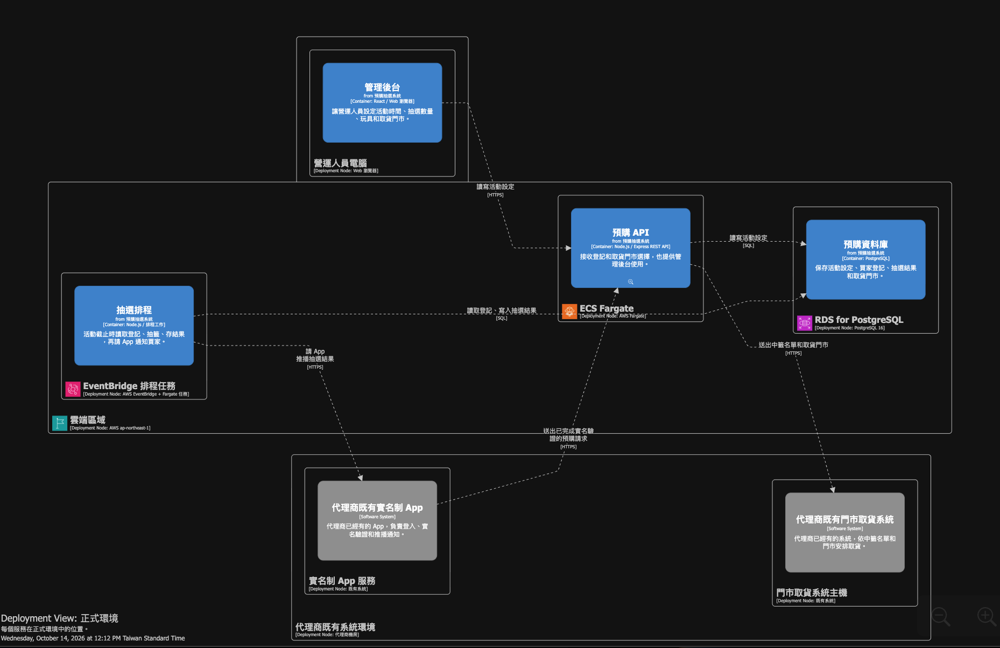

PART 2 / COURSE REVIEW · 10/14 10:10–12:10
AI 驅動架構實戰：Structurizr × OpenCode
Structurizr Workshop 架構模型
講師：郭孟坤（Mansun Kuo）
講師經驗：外商 Staff Solution Architect，專注雲端／軟體架構、AI 工具落地，以及用 AI 優化開發與 DevOps 流程。
郭孟坤 Mansun Kuo · Structurizr DSL
